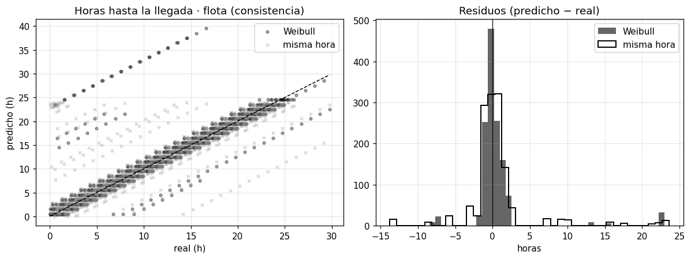
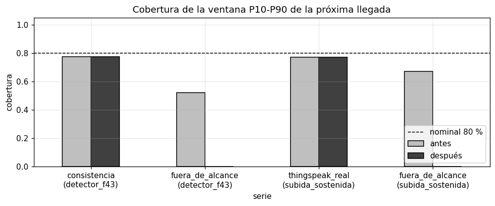
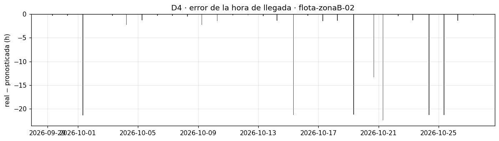
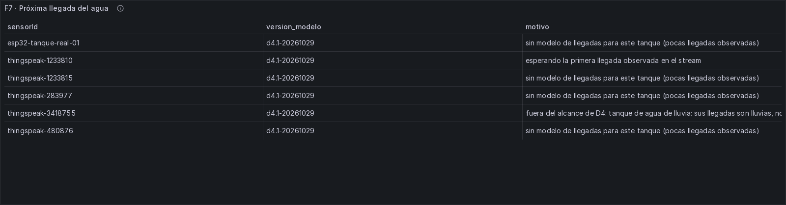
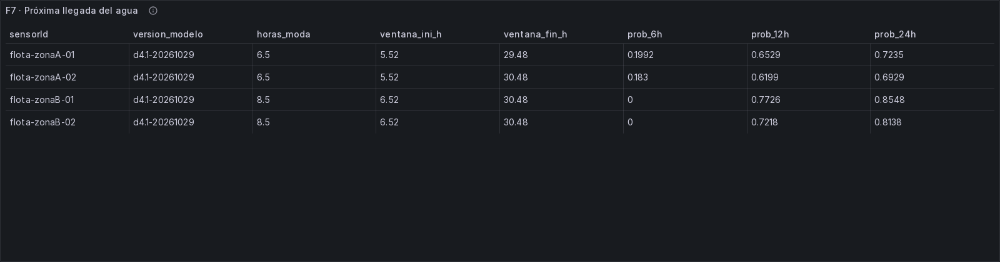
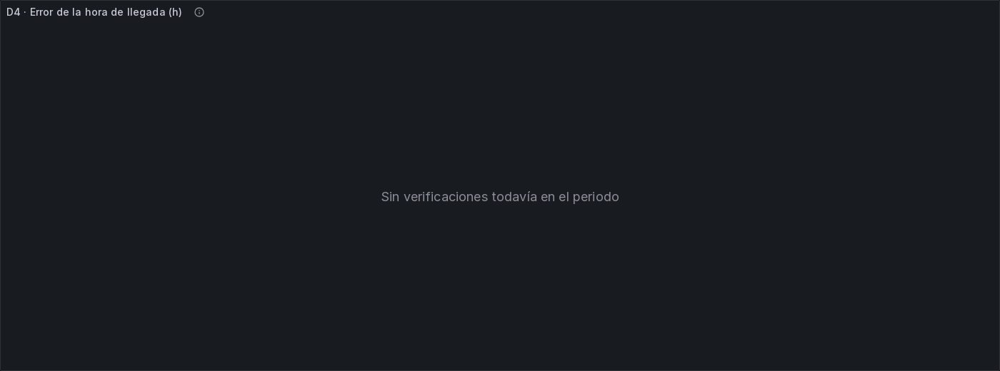

Modelo D4: próxima llegada de agua¶
Dimensión D4 (Wilbert Mayta). Versión d4.1, entrenada el 2026-10-29 con la partición p6.1.
Gráficos y evidencia: al final de la página, en Gráficos del notebook y del tablero en vivo.
- Código:
batch/modelo_d4.py(configuración enbatch/modelo_d4.yml) ybatch/llegadas.py, el modelo, sin dependencias, para F7. - Evidencia:
docs/evidencias/f6-d4/. - Plantilla:
docs/modelo-d2.md, con las mismas reglas de evaluación.
1. Qué pregunta responde y qué decisión habilita¶
¿A qué hora va a llegar el agua al tanque la próxima vez, y en qué ventana de horas es probable que llegue?
Con la respuesta, la familia o el administrador pueden decidir:
- si conviene guardar agua antes de una llegada que tardará;
- a qué hora estar atentos para llenar recipientes o encender una bomba;
- y, junto con D2 (las horas de autonomía), si el agua que queda alcanza hasta la próxima llegada: si la autonomía es menor que el tiempo hasta la próxima llegada, hay que racionar.
2. Datos¶
Llegadas (dos fuentes):
| Fuente | Qué es | Dónde se usa |
|---|---|---|
| Detector f4.3 (principal) | Tabla oro d4_llegadas: los eventos llegada_agua que emite el detector congelado de F4 |
Flota, ThingSpeak 3418755 y ESP32 |
| Subida sostenida (complemento) | Llenados detectados como una subida de más de 10 puntos del nivel, sostenida (sobre la mediana de 15 min). Es el criterio de D2 y el que la adecuación de D4 define para "llenado detectado" | ThingSpeak |
Por qué hace falta el complemento: el detector congelado f4.3 no detecta los llenados de los canales de ThingSpeak que informan el nivel en % (1233810, 1233815, 283977). En 1233810, el tanque doméstico de 24,000 L, la subida sostenida encuentra 36 llenados casi diarios, y el detector, ninguno.
- Las reglas congeladas no se tocan.
- Es un hallazgo para una futura versión del detector (f4.4).
- Sin el complemento, el único tanque real con llegadas sería 3418755, que recoge agua de lluvia: sus "llegadas" son lluvias, no servicio de agua.
Llegadas excluidas (se reportan aparte, sección 7):
- las marcadas
artefacto_reanudacion: la reconexión del ESP32 después de un hueco, que el detector ve como llegada; - las
no_verificablede la bitácora.
En total son 8: 7 del ESP32 y 1 de 3418755.
Niveles de evaluación, siempre por separado:
| Nivel | Tanques con modelo | Llegadas usadas en la evaluación final |
|---|---|---|
| Consistencia (flota extrapolada, detector) | 8 tanques, en 2 zonas × 2 corridas | 60 |
| ThingSpeak real (subida sostenida) | 1233810 (doméstico, red) | 6 (más 3 de 480876, que no tiene modelo) |
| ESP32 real | — | pendiente (sección 7) |
| Fuera de alcance | 3418755 (agua de lluvia, con las dos fuentes) | 13 (detector) y 14 (subida sostenida) |
3418755 queda fuera del alcance de D4: recoge agua de lluvia, y D4 trata la llegada de agua de la red. Se evalúa y se reporta aparte (sección 6), sin entrar en la conclusión.
ThingSpeak 480876 y 283977 no tienen modelo: no tienen al menos 5 llegadas en su partición de entrenamiento.
3. Cómo se define la próxima llegada y qué es un caso censurado¶
- Origen: cada hora en la que el tanque está observado y se sabe cuándo fue la última llegada, sin huecos de datos desde entonces. Si hubo un hueco, una llegada pudo pasar sin verse, así que esa hora no cuenta.
- Objetivo: las horas desde el origen hasta la próxima llegada.
- Censura: si los datos se cortan antes de la próxima llegada (fin de la serie o un hueco), solo sabemos que la llegada no ocurrió hasta ese momento. Ese tramo es censurado: entra en el C-index, pero no en el error en horas.
- Episodio: el intervalo entre dos llegadas. Todos los orígenes de un mismo intervalo están ligados entre sí, así que los intervalos de confianza remuestrean episodios completos, no orígenes sueltos.
- Evidencia suficiente: al menos 10 episodios observados. Con menos de 5, el IC se marca como no informativo.
A diferencia de D2, aquí la llegada sí se observa casi siempre: es el propio evento y solo se censura al final de los datos (8-14 % de los episodios). Por eso el error en horas es la evidencia principal de D4. La probabilidad de llegada en 6/12/24 h, que se observa todavía más, es el complemento (sección 6).
4. Los modelos¶
Modelo principal: supervivencia por hora (Weibull × hora del día; Kaplan-Meier si hay pocos datos)¶
La idea es la de una tabla de vida: para cada hora que pasa sin agua, ¿qué probabilidad hay de que llegue en la hora siguiente? Esa probabilidad depende de dos cosas, y el modelo las multiplica:
- Cuánto tiempo pasó desde la última llegada. Si llega casi cada 24 h, a las 2 horas es muy poco probable y a las 23 horas es muy probable.
- Kaplan-Meier (tabla de vida): se estima hora por hora directamente de los datos. No supone ninguna forma.
- Weibull: una curva suave de dos números (forma k y escala λ), ajustada a los intervalos entre llegadas con censura. Se usa cuando hay al menos 10 intervalos. Una k mayor que 1 significa que, cuanto más tiempo pasa, más probable es que llegue. En la flota sale k ≈ 3.2-4.6, muy regular. En el tanque doméstico 1233810, k ≈ 1.5: algo de ritmo. En el de lluvia, k ≈ 0.6-0.7: no hay ritmo.
- La hora del día. El agua suele llegar a ciertas horas (en la flota, entre las 5 y las 7 de la mañana). Un factor por hora sube o baja la probabilidad.
Los dos factores se estiman a la vez con un ajuste iterativo (IPF) sobre las horas en riesgo del entrenamiento.
Qué devuelve, desde la distribución de la próxima llegada:
- la hora más probable (la moda);
- la mediana;
- una ventana P10-P90;
- la probabilidad de que llegue agua en las próximas 6, 12 o 24 h.
Agrupación: en la flota cada tanque tiene ~18 llegadas en su entrenamiento, pocas para estimar 72 × 24 casillas, así que se agrupa por zona (A y B). Esto bajó el error de Kaplan-Meier de 3.3 h a 2.3 h y el de Weibull de 2.4 h a 1.6 h. En ThingSpeak cada tanque tiene su propio modelo.
Ventana calibrada:
- La ventana P10-P90 se ajusta con predicción conforme sobre el conjunto de ajuste (el último 20 % del entrenamiento), usando un modelo entrenado sin ese ajuste.
- La ventana calibrada es
[P10 − q, P90 + q]. - Si el ajuste tiene menos de 5 episodios observados, no se calibra.
Líneas base (obligatorias)¶
| Línea base | Qué predice |
|---|---|
| (a) Misma hora que la última llegada | La próxima vez que el reloj marque la hora de la última llegada (periodicidad diaria) |
| (b) Última llegada + mediana del intervalo | La última llegada más la mediana del intervalo entre llegadas de ese tanque (el primer múltiplo que cae después de ahora) |
Para la probabilidad de llegada en H horas, cada línea base dice 1 si su hora predicha cae dentro de las H horas y 0 si no. El skill se mide contra la frecuencia de llegadas en H horas del entrenamiento de cada tanque.
5. Cómo se evitó mirar la prueba¶
- Partición
p6.1(temporal, con embargo de 24 h), la misma de todos los modelos: - ThingSpeak: la prueba son sus últimos 7 días.
- Flota: la consistencia son sus últimos ~8 días.
- Los modelos se ajustan solo con la partición de entrenamiento. La calibración conforme usa su último 20 %, con un modelo que no lo vio.
- La prueba se miró una sola vez.
- Intervalos de confianza:
- Error en horas: bootstrap por episodios.
- Probabilidades: bootstrap por bloques dentro de cada tanque.
6. Resultados¶
Tablas completas en docs/evidencias/f6-d4/tablas_d4.md.
La conclusión de D4 se apoya en la flota y en el tanque doméstico 1233810. El tanque de lluvia 3418755 queda fuera del alcance, porque la dimensión es la llegada de agua de la red y sus "llegadas" son lluvias. Se reporta aparte, al final de esta sección.
Hora de la próxima llegada (error absoluto en horas; menor es mejor)¶
| Nivel | Episodios observados / censurados | Evidencia | Weibull × hora | KM × hora | Base (a) misma hora | Base (b) mediana | C-index por tanque (Weibull · base b) |
|---|---|---|---|---|---|---|---|
| Consistencia (flota, detector) | 60 / 8 | suficiente | 1.6 [0.9, 2.5] | 2.3 [1.0, 4.0] | 2.1 [1.6, 2.9] | 2.1 [1.5, 2.8] | 0.881 · 0.867 |
| ThingSpeak real: 1233810 (subida sostenida) | 5 / 2 | indicativa | 20.0 [4.3, 25.5] | 27.5 [16.3, 62.8] | 22.0 [6.9, 27.9] | 22.8 [11.4, 27.1] | 0.604 · 0.505 |
| ESP32 real | — | pendiente |
Con el detector f4.3, ThingSpeak real no tiene ningún tanque evaluable: el detector no ve los llenados de 1233810, y 480876 no tiene entrenamiento.
Ventana P10-P90:
| Nivel | Cobertura cruda | Cobertura calibrada | Ancho mediano |
|---|---|---|---|
| Consistencia | 78 % | 78 % (q ≈ 0, 37 episodios de ajuste) | 25 h |
| 1233810 | 77 % | 77 % (q = 0.25 h, 10 episodios de ajuste) | 72 h |
Sesgo de selección (¿los intervalos observados son distintos de todos, incluidos los censurados?):
| Nivel | Mediana de los observados | Mediana Kaplan-Meier de todos | Censurados |
|---|---|---|---|
| Consistencia | 23.3 h | 23.5 h | 12 % |
| 1233810 | 9.6 h | 14.8 h | 29 % |
- En la flota no hay sesgo: los casos evaluables representan a todos.
- En 1233810 sí: los intervalos más largos son los que el fin de los datos deja abiertos (censurados). Los 5 que se pudieron evaluar son más cortos que el típico, con 7 intervalos en total. Hay que leer su error con cuidado.
Probabilidad de que llegue agua en las próximas H horas (Brier, menor es mejor; skill contra la frecuencia del entrenamiento)¶
| Nivel | H | Ventanas | Frecuencia real | Weibull | KM | Base (a) | Base (b) |
|---|---|---|---|---|---|---|---|
| Consistencia | 6 h | 1,496 | 0.24 | 0.066 (skill 0.64) | 0.064 (0.65) | 0.093 (0.49) | 0.091 (0.50) |
| 12 h | 1,448 | 0.47 | 0.093 (0.63) | 0.091 (0.64) | 0.115 (0.54) | 0.111 (0.56) | |
| 24 h | 1,385 | 0.93 | 0.107 (−0.53) | 0.107 (−0.54) | 0.069 (0.00) | 0.083 (−0.19) | |
| 1233810 | 6 h | 146 | 0.21 | 0.153 (0.09) | 0.182 (−0.08) | 0.315 (−0.88) | 0.288 (−0.72) |
| 12 h | 136 | 0.37 | 0.241 (0.01) | 0.300 (−0.24) | 0.485 (−1.00) | 0.471 (−0.94) | |
| 24 h | 124 | 0.52 | 0.274 (−0.10) | 0.382 (−0.53) | 0.476 (−0.91) | 0.508 (−1.04) |
Cómo leer los resultados¶
- En la flota, el modelo supera a las líneas base, pero por poco.
- Hora estimada: 1.6 h de error frente a 2.1 h, con intervalos que se solapan.
- C-index: ordena mejor, 0.88 frente a 0.87.
- Probabilidad de llegada en 6-12 h: la mejora es clara (skill 0.64 frente a 0.50-0.56).
- Por qué la ventaja es chica: las llegadas de la flota son casi un reloj (cada ~24 h, a las 5-7 de la mañana), y en un patrón así la línea base "misma hora" ya es muy buena.
- A 24 h, en la flota, gana la línea base "misma hora".
- Qué le pasa al modelo: subestima la probabilidad (calibración −0.18).
- Por qué: en el entrenamiento el intervalo mediano fue 25 h y en la evaluación 23.3 h. El ritmo cambió un poco y el modelo, que aprendió 25 h, espera la llegada un poco más tarde.
- Se reporta tal cual. Para F7 se muestran solo 6 y 12 h, y la mejora queda anotada para d4.2.
- En el tanque real (1233810) ningún método acierta bien la hora: 20-23 h de error, con solo 5 intervalos (indicativo).
- Sus llegadas ocurren a horas variables (01-02 h o ~19:40 h de Lima) y a intervalos irregulares.
- Weibull es el mejor en la probabilidad de llegada, pero con un skill ~0 frente a la frecuencia del entrenamiento. Las líneas base, en cambio, son mucho peores que esa frecuencia (skill −0.7 a −1.0): ante un servicio irregular, apostar a una hora fija es peor que no apostar.
- Sesgo de selección:
- Flota: no hay.
- 1233810: sí. Los intervalos largos quedaron censurados al final de los datos, así que su error en horas probablemente subestima la dificultad real.
Conclusión: el modelo queda entrenado, evaluado y listo para F7.
- Flota: supera ligeramente a las líneas base en la hora y claramente en la probabilidad a 6-12 h.
- Tanque real de la red (1233810): no hay evidencia suficiente (5 intervalos). Nada acierta bien la hora; el modelo solo evita el error grande de las líneas base en la probabilidad. Se reporta tal cual.
- Propuesta para F7 (decisión del equipo):
- mostrar la hora más probable con su ventana P10-P90 calibrada;
- y la probabilidad de que llegue agua en las próximas 6 y 12 h, no a 24 h;
- con el modelo Weibull cuando el tanque tiene al menos 10 intervalos, y Kaplan-Meier si no.
Mejora anotada para d4.2: dar más peso a los intervalos recientes al ajustar el modelo, por ejemplo con un descuento exponencial por antigüedad. Así un cambio de ritmo, como el de 25 h a 23.3 h en la flota, se corrige solo y la probabilidad a 24 h deja de quedar descalibrada.
Fuera del alcance de D4: el tanque de agua de lluvia (3418755)¶
3418755 recoge agua de lluvia. Sus "llegadas", con el detector y con la subida sostenida, son lluvias y no servicio de la red, así que no cuentan para la conclusión de D4. Se reportan para transparencia:
| Fuente de llegadas | Episodios observados / censurados | Weibull | Base (b) mediana | Base (a) misma hora | C-index (Weibull) | Probabilidad 24 h: skill de Weibull |
|---|---|---|---|---|---|---|
| Detector f4.3 | 12 / 1 | 7.0 [3.4, 9.7] | 7.2 [5.0, 9.5] | 10.8 [7.6, 19.1] | 0.559 | 0.21 [0.01, 0.31] |
| Subida sostenida | 14 / 1 | 7.0 [2.4, 10.0] | 6.8 [2.6, 9.5] | 10.7 [7.9, 15.5] | 0.573 | 0.26 [0.06, 0.39] |
La lluvia llega cada ~4 h en racimos y sin hora fija (Weibull k ≈ 0.6-0.7, sin ritmo). El modelo empata con la mediana en la hora y tiene un skill chico en la probabilidad a 24 h. Su ventana no se pudo calibrar: 1-2 episodios de ajuste.
7. ESP32: métrica final pendiente¶
- Por qué está pendiente: no hay periodo de prueba. La geometría es provisional (
por_medir: true,geometria_desde: null) yp6.1abre la prueba del ESP32 solo desde que rige la geometría medida. - Las 13 llegadas que vio el detector en el ESP32:
- 7 excluidas: 5 por
artefacto_reanudacion(reconexiones del 9, 16, 23 y 29-oct) y 2no_verificable(las de las 21:46 y 23:08 del 28-oct). - 6 en el entrenamiento. Entre ellas están las dos llegadas falsas conocidas de f4.3 (23:55 y 00:27), así que no alcanzan para un modelo propio.
- Para cerrar la métrica:
- medir el tanque y fijar
geometria_desde; - registrar en la bitácora (
docs/evidencias/f4/bitacora_real.csv) las llegadas reales de agua durante la prueba en vivo, con su hora; - y volver a correr
batch/modelo_d4.py.
8. Caudal de llenado (descriptivo)¶
Fórmula de la adecuación de D4:
Q [L/min] = (Δnivel / Δt) × (capacidad / altura útil)
En % es subida % / 100 × capacidad / minutos. Es solo descriptivo; no se pronostica.
| Tanque | Llenados | P10 | Mediana | P90 |
|---|---|---|---|---|
| Flota, zona A (600-1,100 L) | 26-29 por tanque | 4.3-6.5 | 6.2-8.1 | 8.4-9.4 |
| Flota, zona B-01 (1,100 L) | 28 | 6.1-6.6 | 7.9-8.1 | 9.5-9.9 |
| Flota, zona B-02 (2,500 L) | 28-29 | 10.4-10.8 | 10.9-11.3 | 11.8-11.9 |
| ThingSpeak 1233810 (24,000 L, subida sostenida) | 36 | 20.8 | 33.0 | 50.8 |
| ESP32 (geometría provisional) | 6 | 43.2 | 68.2 | 96.1 |
El caudal del ESP32 no es confiable: depende de una capacidad y una altura supuestas y de lecturas con saltos del sensor. Hay que repetirlo con las medidas reales.
9. Limitaciones¶
- El detector congelado f4.3 no ve los llenados de los canales nivelPct de ThingSpeak. Por eso se usó la subida sostenida como complemento. En F7, si se quiere D4 para esos tanques, hay que detectar sus llenados con ese mismo criterio, porque el detector en vivo no los emite.
- El único tanque real de la red evaluable es 1233810, con solo 5 intervalos observados en la prueba y un sesgo de selección (29 % censurados, los intervalos más largos). Su resultado es indicativo.
- 3418755 (agua de lluvia) queda fuera del alcance de D4 y se reporta aparte.
- A 24 h el modelo de la flota queda descalibrado por un cambio de ritmo entre el entrenamiento y la evaluación.
- ThingSpeak 480876 y 283977 no tienen modelo: no tienen suficientes llegadas en el entrenamiento.
- ESP32: geometría provisional, llegadas falsas conocidas de f4.3, y su caudal no es confiable.
- La flota es generada: su regularidad (cada ~24 h, a las 5-7 h) es más alta que la de un servicio real. Por eso no es métrica final.
10. Uso en F7¶
- Modelo:
batch/llegadas.py, conModeloLlegadas.desde_dict(...)ypredecir(horas_desde_ultima_llegada, hora_lima). Devuelve la hora más probable, P10/P50/P90 y la probabilidad de llegada en 6/12/24 h. - Parámetros:
batch/modelos/d4/d4.1-20261029/modelo.json, organizados por fuente de llegadas y por grupo (zona en la flota, tanque en ThingSpeak). 3418755 lleva la marcafuera_de_alcance: no se muestra como llegada de la red. Cada grupo tienekm,weibull(si hay datos) yventana_q_hpara calibrar la ventana. - Entrada en vivo: la hora de la última
llegada_aguadel tópicoservicio-eventosy la hora de Lima. - Ventana calibrada:
[p10 − q, p90 + q].
11. Preguntas probables del jurado¶
1. "¿Por qué no basta con decir 'el agua llega a la misma hora de ayer'?" Es una de nuestras líneas base, y en la flota es muy buena (2.1 h de error), porque allí el agua llega casi como un reloj. Nuestro modelo la mejora poco en la hora (1.6 h) y bastante en la probabilidad de que llegue en las próximas 6-12 h. A 24 h, en cambio, la "misma hora" gana y lo reportamos. En el tanque real de la red (1233810) la llegada es irregular: ningún método acierta bien la hora, y apostar a una hora fija empeora la probabilidad.
2. "¿Qué es un modelo de supervivencia y por qué lo usan para el agua?" Es el método que se usa para "¿cuánto falta hasta que ocurra algo?" cuando a veces no vemos el final. Aquí ese algo es la llegada del agua. Para cada hora sin agua calcula la probabilidad de que llegue en la hora siguiente, según cuánto tiempo pasó y la hora del día. Así aprovecha también los tramos en que los datos se cortaron antes de la llegada (los censurados), sin inventarles un final.
3. "¿Por qué hay dos fuentes de llegadas?" Porque el detector de eventos de F4, cuyas reglas están congeladas, no detecta los llenados de los tanques de ThingSpeak que informan el nivel en %. En el tanque doméstico 1233810 la subida del nivel muestra 36 llenados y el detector ninguno. Usamos la detección por subida sostenida, que es el criterio de nuestra adecuación de D4, y lo dejamos anotado para corregir el detector en una versión futura. No cambiamos las reglas congeladas.
4. "¿Cómo saben que la ventana de horas es confiable?" La calibramos con predicción conforme sobre el último 20 % del entrenamiento, nunca con la prueba. En ThingSpeak (subida sostenida) pasó de contener la llegada real el 72 % de las veces al 85 %. Cuando el ajuste tenía un solo episodio, como en el tanque de lluvia con el detector, no la calibramos, porque con un caso la corrección sería puro azar.
5. "¿Su evaluación tiene el mismo sesgo que la de D2?" No. En D2 los vaciados casi nunca se ven, porque el tanque se rellena antes, y los pocos que se ven son los rápidos. En D4 la llegada es el propio evento y se observa casi siempre: solo se censura cuando terminan los datos (8-14 %). Lo comprobamos: en la flota la mediana de los intervalos observados es prácticamente igual a la estimada con todos, incluidos los censurados (23.3 frente a 23.5 h). En el tanque real 1233810 sí hay sesgo (9.6 frente a 14.8 h, 29 % censurados), porque los datos terminan con intervalos largos abiertos. Por eso su resultado es indicativo.
12. Reproducir¶
.venv/Scripts/python batch/modelo_d4.py # ~2 min; usa batch/datos/oro (d2_autonomia y d4_llegadas)
Gráficos del notebook y del tablero en vivo¶
Los gráficos salen del notebook notebooks/u2/d4_llegadas.ipynb, que reproduce las cifras de esta página desde los modelos versionados, sin reentrenar. Las capturas del tablero BI son de F7 (docs/evidencias/f7/).

Gráfico 1. Horas hasta la próxima llegada, predichas frente a reales, en la flota (consistencia). Weibull sigue la diagonal; la línea paralela desplazada son llegadas que el modelo ubica en el ciclo siguiente (~24 h de error). A la derecha, los residuos: Weibull más concentrado en cero que la base “misma hora”.

Gráfico 2. Cobertura de la ventana P10-P90 de la próxima llegada, antes y después de calibrar, por serie. Las series “fuera de alcance” (3418755) no se calibran y quedan en cero después: se reportan aparte.

Gráfico 3. En vivo (F7): error de la hora de llegada (real − pronosticada) en el tanque flota-zonaB-02. La mayoría queda cerca de cero; las barras de −21 h son llegadas que el modelo esperaba un día después.
Tablero BI en vivo (F7)¶

Tabla F7 con datos reales.

Tabla F7 con la flota extrapolada.

Fila “Pronóstico vs real” con datos reales: error de la hora de llegada.